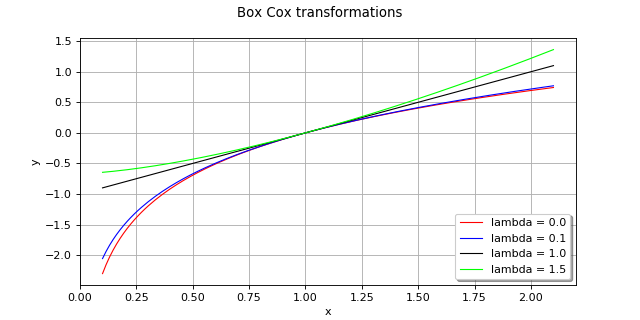
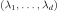
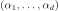
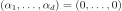
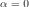
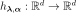
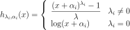
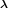

BoxCoxTransform¶
(Source code, png, hires.png, pdf)

-
class
BoxCoxTransform(*args)¶ BoxCox transformation.
Refer to Box Cox transformation.
- Available constructors:
BoxCoxTransform(lambdaVect, shiftVect = [0])
BoxCoxTransform(lambda, shift=0)
- Parameters
- lambdaVectsequence of float
The

parameter.- shiftVectsequence of float
The

parameter.Default is

.- lambdafloat
The
 parameter in the univariate case.
parameter in the univariate case.- shiftfloat
The
 parameter in the univariate case.
parameter in the univariate case.Default is

.
Notes
The Box Cox transformation

writes for each component :
:

for all
 .
.The inverse Box Cox transformation writes:
Examples
Create a Box Cox tranformation:
>>> import openturns as ot >>> myLambda = 0.1 >>> myBoxCox = ot.BoxCoxTransform(myLambda)
Estimate a transformation from a sample:
>>> mySample = ot.Exponential(2).getSample(100) >>> myModelTransform = ot.BoxCoxFactory().build(mySample)
Apply ot to the sample:
>>> myNormalSample = myModelTransform(mySample)
>>> hist = ot.HistogramFactory().build(myNormalSample) >>> graph = hist.drawPDF()
Apply it to a field:
>>> myIndices= ot.Indices([10,5]) >>> myMesher=ot.IntervalMesher(myIndices) >>> myInterval = ot.Interval([0.0, 0.0], [2.0, 1.0]) >>> myMesh=myMesher.build(myInterval) >>> amplitude=[1.0] >>> scale=[0.2, 0.2] >>> myCovModel=ot.ExponentialModel(scale, amplitude) >>> myXproc=ot.GaussianProcess(myCovModel, myMesh) >>> g = ot.SymbolicFunction(['x1'], ['exp(x1)']) >>> myDynTransform = ot.ValueFunction(g, myMesh) >>> myXtProcess = ot.CompositeProcess(myDynTransform, myXproc)
>>> myField = myXtProcess.getRealization() >>> myModelTransform = ot.BoxCoxFactory().build(myField) >>> myStabilizedField = myModelTransform(myField.getValues())
>>> marginal = ot.HistogramFactory().build(myStabilizedField) >>> graph2 = marginal.drawPDF()
Methods
__call__(self, \*args)Call self as a function.
draw(self, \*args)Draw the output of function as a
Graph.getCallsNumber(self)Accessor to the number of times the function has been called.
getClassName(self)Accessor to the object’s name.
getDescription(self)Accessor to the description of the inputs and outputs.
getEvaluation(self)Accessor to the evaluation function.
getEvaluationCallsNumber(self)Accessor to the number of times the function has been called.
getGradient(self)Accessor to the gradient function.
getGradientCallsNumber(self)Accessor to the number of times the gradient of the function has been called.
getHessian(self)Accessor to the hessian function.
getHessianCallsNumber(self)Accessor to the number of times the hessian of the function has been called.
getId(self)Accessor to the object’s id.
getImplementation(self, \*args)Accessor to the underlying implementation.
getInputDescription(self)Accessor to the description of the input vector.
getInputDimension(self)Accessor to the dimension of the input vector.
getInverse(self)Accessor to the inverse Box Cox transformation.
getLambda(self)Accessor to the

parameter.getMarginal(self, \*args)Accessor to marginal.
getName(self)Accessor to the object’s name.
getOutputDescription(self)Accessor to the description of the output vector.
getOutputDimension(self)Accessor to the number of the outputs.
getParameter(self)Accessor to the parameter values.
getParameterDescription(self)Accessor to the parameter description.
getParameterDimension(self)Accessor to the dimension of the parameter.
getShift(self)Accessor to the
 parameter.
parameter.gradient(self, inP)Return the Jacobian transposed matrix of the function at a point.
hessian(self, inP)Return the hessian of the function at a point.
parameterGradient(self, inP)Accessor to the gradient against the parameter.
setDescription(self, description)Accessor to the description of the inputs and outputs.
setEvaluation(self, evaluation)Accessor to the evaluation function.
setGradient(self, gradient)Accessor to the gradient function.
setHessian(self, hessian)Accessor to the hessian function.
setInputDescription(self, inputDescription)Accessor to the description of the input vector.
setName(self, name)Accessor to the object’s name.
setOutputDescription(self, inputDescription)Accessor to the description of the output vector.
setParameter(self, parameter)Accessor to the parameter values.
setParameterDescription(self, description)Accessor to the parameter description.
-
__init__(self, *args)¶ Initialize self. See help(type(self)) for accurate signature.
-
draw(self, *args)¶ Draw the output of function as a
Graph.- Available usages:
draw(inputMarg, outputMarg, CP, xiMin, xiMax, ptNb)
draw(firstInputMarg, secondInputMarg, outputMarg, CP, xiMin_xjMin, xiMax_xjMax, ptNbs)
draw(xiMin, xiMax, ptNb)
draw(xiMin_xjMin, xiMax_xjMax, ptNbs)
- Parameters
- outputMarg, inputMargint,

outputMarg is the index of the marginal to draw as a function of the marginal with index inputMarg.
- firstInputMarg, secondInputMargint,

In the 2D case, the marginal outputMarg is drawn as a function of the two marginals with indexes firstInputMarg and secondInputMarg.
- CPsequence of float
Central point.
- xiMin, xiMaxfloat
Define the interval where the curve is plotted.
- xiMin_xjMin, xiMax_xjMaxsequence of float of dimension 2.
In the 2D case, define the intervals where the curves are plotted.
- ptNbint
 or list of ints of dimension 2
or list of ints of dimension 2 
The number of points to draw the curves.
- outputMarg, inputMargint,
Notes
We note
 where
where  and
and
 ,
with
,
with  and
and  .
.In the first usage:
Draws graph of the given 1D outputMarg marginal
 as a function of the given 1D inputMarg
marginal with respect to the variation of
as a function of the given 1D inputMarg
marginal with respect to the variation of  in the interval
in the interval
![[x_i^{min}, x_i^{max}]](../../_images/math/2ce00bdcb5570f9581a76c1a863aa753d66ce9be.svg) , when all the other components of
, when all the other components of
 are fixed to the corresponding ones of the central point CP.
Then OpenTURNS draws the graph:
are fixed to the corresponding ones of the central point CP.
Then OpenTURNS draws the graph:
![t\in [x_i^{min}, x_i^{max}] \mapsto f_k(CP_1, \dots, CP_{i-1}, t, CP_{i+1} \dots, CP_n)](../../_images/math/7fdcf5d8042db6ffcb9053ca152aa796a2d36423.svg) .
.In the second usage:
Draws the iso-curves of the given outputMarg marginal
 as a
function of the given 2D firstInputMarg and secondInputMarg marginals
with respect to the variation of
as a
function of the given 2D firstInputMarg and secondInputMarg marginals
with respect to the variation of  in the interval
in the interval
![[x_i^{min}, x_i^{max}] \times [x_j^{min}, x_j^{max}]](../../_images/math/4ed1d2acbe12543990d1777c4ca4e09999fd8aaf.svg) , when all the
other components of are fixed to the corresponding ones of the
central point CP. Then OpenTURNS draws the graph:
, when all the
other components of are fixed to the corresponding ones of the
central point CP. Then OpenTURNS draws the graph:
![(t,u) \in [x_i^{min}, x_i^{max}] \times [x_j^{min}, x_j^{max}] \mapsto f_k(CP_1, \dots, CP_{i-1}, t, CP_{i+1}, \dots, CP_{j-1}, u, CP_{j+1} \dots, CP_n)](../../_images/math/62a1316e2d7166058470c4a5d02481ebcb7e615b.svg) .
.In the third usage:
The same as the first usage but only for function
 .
.In the fourth usage:
The same as the second usage but only for function
 .
.Examples
>>> import openturns as ot >>> from openturns.viewer import View >>> f = ot.SymbolicFunction('x', 'sin(2*pi_*x)*exp(-x^2/2)') >>> graph = f.draw(-1.2, 1.2, 100) >>> View(graph).show()
-
getCallsNumber(self)¶ Accessor to the number of times the function has been called.
- Returns
- calls_numberint
Integer that counts the number of times the function has been called since its creation.
-
getClassName(self)¶ Accessor to the object’s name.
- Returns
- class_namestr
The object class name (object.__class__.__name__).
-
getDescription(self)¶ Accessor to the description of the inputs and outputs.
- Returns
- description
Description Description of the inputs and the outputs.
- description
Examples
>>> import openturns as ot >>> f = ot.SymbolicFunction(['x1', 'x2'], ... ['2 * x1^2 + x1 + 8 * x2 + 4 * cos(x1) * x2 + 6']) >>> print(f.getDescription()) [x1,x2,y0]
-
getEvaluation(self)¶ Accessor to the evaluation function.
- Returns
- function
EvaluationImplementation The evaluation function.
- function
Examples
>>> import openturns as ot >>> f = ot.SymbolicFunction(['x1', 'x2'], ... ['2 * x1^2 + x1 + 8 * x2 + 4 * cos(x1) * x2 + 6']) >>> print(f.getEvaluation()) [x1,x2]->[2 * x1^2 + x1 + 8 * x2 + 4 * cos(x1) * x2 + 6]
-
getEvaluationCallsNumber(self)¶ Accessor to the number of times the function has been called.
- Returns
- evaluation_calls_numberint
Integer that counts the number of times the function has been called since its creation.
-
getGradient(self)¶ Accessor to the gradient function.
- Returns
- gradient
GradientImplementation The gradient function.
- gradient
-
getGradientCallsNumber(self)¶ Accessor to the number of times the gradient of the function has been called.
- Returns
- gradient_calls_numberint
Integer that counts the number of times the gradient of the Function has been called since its creation. Note that if the gradient is implemented by a finite difference method, the gradient calls number is equal to 0 and the different calls are counted in the evaluation calls number.
-
getHessian(self)¶ Accessor to the hessian function.
- Returns
- hessian
HessianImplementation The hessian function.
- hessian
-
getHessianCallsNumber(self)¶ Accessor to the number of times the hessian of the function has been called.
- Returns
- hessian_calls_numberint
Integer that counts the number of times the hessian of the Function has been called since its creation. Note that if the hessian is implemented by a finite difference method, the hessian calls number is equal to 0 and the different calls are counted in the evaluation calls number.
-
getId(self)¶ Accessor to the object’s id.
- Returns
- idint
Internal unique identifier.
-
getImplementation(self, *args)¶ Accessor to the underlying implementation.
- Returns
- implImplementation
The implementation class.
-
getInputDescription(self)¶ Accessor to the description of the input vector.
- Returns
- description
Description Description of the input vector.
- description
Examples
>>> import openturns as ot >>> f = ot.SymbolicFunction(['x1', 'x2'], ... ['2 * x1^2 + x1 + 8 * x2 + 4 * cos(x1) * x2 + 6']) >>> print(f.getInputDescription()) [x1,x2]
-
getInputDimension(self)¶ Accessor to the dimension of the input vector.
- Returns
- inputDimint
Dimension of the input vector
 .
.
Examples
>>> import openturns as ot >>> f = ot.SymbolicFunction(['x1', 'x2'], ... ['2 * x1^2 + x1 + 8 * x2 + 4 * cos(x1) * x2 + 6']) >>> print(f.getInputDimension()) 2
-
getInverse(self)¶ Accessor to the inverse Box Cox transformation.
- Returns
- myInverseBoxCox
InverseBoxCoxTransform The inverse Box Cox transformation.
- myInverseBoxCox
-
getMarginal(self, *args)¶ Accessor to marginal.
- Parameters
- indicesint or list of ints
Set of indices for which the marginal is extracted.
- Returns
- marginal
Function Function corresponding to either
 or
or
 , with
, with  and
and  .
.
- marginal
-
getName(self)¶ Accessor to the object’s name.
- Returns
- namestr
The name of the object.
-
getOutputDescription(self)¶ Accessor to the description of the output vector.
- Returns
- description
Description Description of the output vector.
- description
Examples
>>> import openturns as ot >>> f = ot.SymbolicFunction(['x1', 'x2'], ... ['2 * x1^2 + x1 + 8 * x2 + 4 * cos(x1) * x2 + 6']) >>> print(f.getOutputDescription()) [y0]
-
getOutputDimension(self)¶ Accessor to the number of the outputs.
- Returns
- number_outputsint
Dimension of the output vector
 .
.
Examples
>>> import openturns as ot >>> f = ot.SymbolicFunction(['x1', 'x2'], ... ['2 * x1^2 + x1 + 8 * x2 + 4 * cos(x1) * x2 + 6']) >>> print(f.getOutputDimension()) 1
-
getParameterDescription(self)¶ Accessor to the parameter description.
- Returns
- parameter
Description The parameter description.
- parameter
-
getParameterDimension(self)¶ Accessor to the dimension of the parameter.
- Returns
- parameterDimensionint
Dimension of the parameter.
-
gradient(self, inP)¶ Return the Jacobian transposed matrix of the function at a point.
- Parameters
- pointsequence of float
Point where the Jacobian transposed matrix is calculated.
- Returns
- gradient
Matrix The Jacobian transposed matrix of the function at point.
- gradient
Examples
>>> import openturns as ot >>> f = ot.SymbolicFunction(['x1', 'x2'], ... ['2 * x1^2 + x1 + 8 * x2 + 4 * cos(x1) * x2 + 6','x1 + x2']) >>> print(f.gradient([3.14, 4])) [[ 13.5345 1 ] [ 4.00001 1 ]]
-
hessian(self, inP)¶ Return the hessian of the function at a point.
- Parameters
- pointsequence of float
Point where the hessian of the function is calculated.
- Returns
- hessian
SymmetricTensor Hessian of the function at point.
- hessian
Examples
>>> import openturns as ot >>> f = ot.SymbolicFunction(['x1', 'x2'], ... ['2 * x1^2 + x1 + 8 * x2 + 4 * cos(x1) * x2 + 6','x1 + x2']) >>> print(f.hessian([3.14, 4])) sheet #0 [[ 20 -0.00637061 ] [ -0.00637061 0 ]] sheet #1 [[ 0 0 ] [ 0 0 ]]
-
parameterGradient(self, inP)¶ Accessor to the gradient against the parameter.
- Returns
- gradient
Matrix The gradient.
- gradient
-
setDescription(self, description)¶ Accessor to the description of the inputs and outputs.
- Parameters
- descriptionsequence of str
Description of the inputs and the outputs.
Examples
>>> import openturns as ot >>> f = ot.SymbolicFunction(['x1', 'x2'], ... ['2 * x1^2 + x1 + 8 * x2 + 4 * cos(x1) * x2 + 6']) >>> print(f.getDescription()) [x1,x2,y0] >>> f.setDescription(['a','b','y']) >>> print(f.getDescription()) [a,b,y]
-
setEvaluation(self, evaluation)¶ Accessor to the evaluation function.
- Parameters
- function
EvaluationImplementation The evaluation function.
- function
-
setGradient(self, gradient)¶ Accessor to the gradient function.
- Parameters
- gradient_function
GradientImplementation The gradient function.
- gradient_function
Examples
>>> import openturns as ot >>> f = ot.SymbolicFunction(['x1', 'x2'], ... ['2 * x1^2 + x1 + 8 * x2 + 4 * cos(x1) * x2 + 6']) >>> f.setGradient(ot.CenteredFiniteDifferenceGradient( ... ot.ResourceMap.GetAsScalar('CenteredFiniteDifferenceGradient-DefaultEpsilon'), ... f.getEvaluation()))
-
setHessian(self, hessian)¶ Accessor to the hessian function.
- Parameters
- hessian_function
HessianImplementation The hessian function.
- hessian_function
Examples
>>> import openturns as ot >>> f = ot.SymbolicFunction(['x1', 'x2'], ... ['2 * x1^2 + x1 + 8 * x2 + 4 * cos(x1) * x2 + 6']) >>> f.setHessian(ot.CenteredFiniteDifferenceHessian( ... ot.ResourceMap.GetAsScalar('CenteredFiniteDifferenceHessian-DefaultEpsilon'), ... f.getEvaluation()))
-
setInputDescription(self, inputDescription)¶ Accessor to the description of the input vector.
- Parameters
- description
Description Description of the input vector.
- description
-
setName(self, name)¶ Accessor to the object’s name.
- Parameters
- namestr
The name of the object.
-
setOutputDescription(self, inputDescription)¶ Accessor to the description of the output vector.
- Parameters
- description
Description Description of the output vector.
- description
-
setParameter(self, parameter)¶ Accessor to the parameter values.
- Parameters
- parametersequence of float
The parameter values.
-
setParameterDescription(self, description)¶ Accessor to the parameter description.
- Parameters
- parameter
Description The parameter description.
- parameter
 parameter.
parameter.{kind=link}
{kind=link}